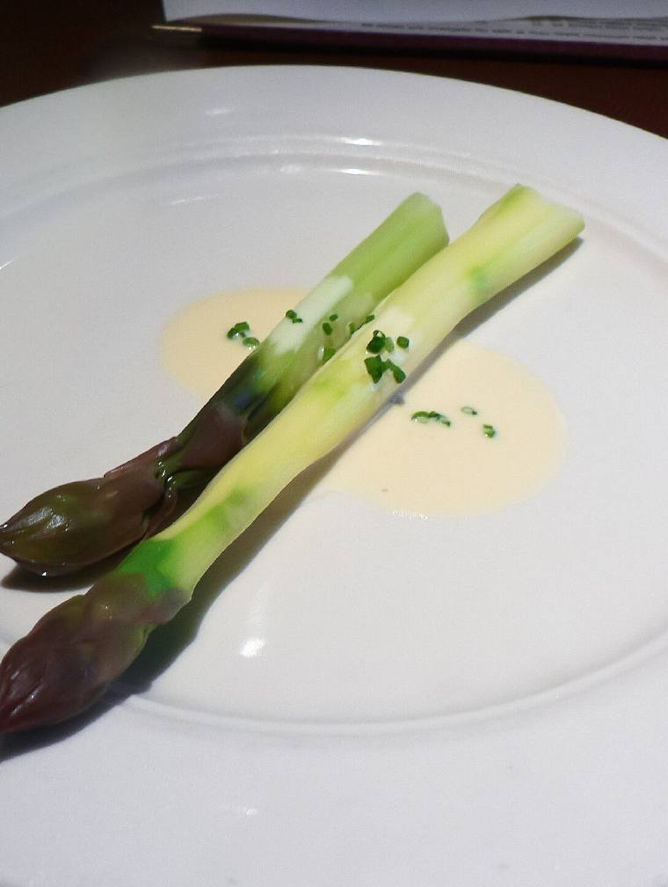

Sauces

Sauces
Beurre blanc nantais
Préparation : 15 min
Cuisson : 20 min
Ingrédients (pour 8 personnes)
- 500 g de beurre demi-sel froid
- 10 échalotes
- 2 cuillères à café de vinaigre de vin
- 2 cuillères à café de muscadet
- 2 cuillères à soupe de crème épaisse (facultatif)
- poivre
Quantités adaptées. Les temps de cuisson ne sont pas recalculés.
- Faire réduire doucement échalotes hachées, vinaigre, muscadet et poivre.
- Ajouter la crème et reporter à ébullition, si on en met.
- À feu très doux, incorporer le beurre froid en morceaux en fouettant énergiquement.
- Servir aussitôt, avec les échalotes.
À consommer aussitôt, ne pas conserver
Jeter ce qui reste, ne pas réchauffer.
AstuceLa tradition se passe de crème, mais elle rend la sauce plus stable.
D’après Le Voyage à Nantes, office de tourisme. Traduit et reformulé.